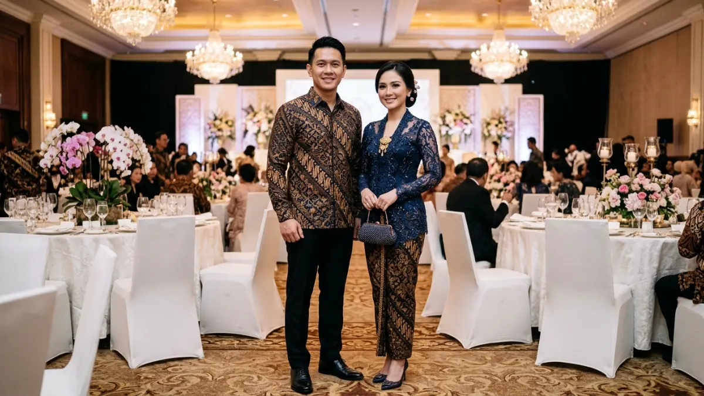

Dress code gala dinner umumnya formal, yaitu jas atau batik formal untuk pria dan gaun malam atau kebaya untuk wanita, mengikuti tema yang ditetapkan panitia.
- Dress code adalah aturan berpakaian yang biasanya tercantum pada undangan gala dinner.
- Pilihan umum meliputi black tie, semi formal, cocktail attire, dan busana adat atau batik formal.
- Warna netral dan potongan sopan adalah pilihan aman bila tamu ragu.
- Panitia perlu menuliskan dress code dengan contoh yang jelas pada undangan.
DAFTAR ISI
- 1. Apa Itu Dress Code Gala Dinner dan Mengapa Penting?
- 2. Apa Beda Black Tie, Semi Formal, dan Cocktail Attire?
- 3. Bagaimana Pakaian Gala Dinner untuk Pria?
- 4. Bagaimana Pakaian Gala Dinner untuk Wanita?
- 5. Bagaimana Memilih Busana untuk Gala Dinner Bertema Budaya Indonesia?
- 6. Warna dan Aksesori Apa yang Aman untuk Gala Dinner?
- 7. Bagaimana Panitia Menyampaikan Dress Code kepada Tamu?
- 8. Kesalahan Berpakaian yang Perlu Dihindari di Gala Dinner
- 9. Kesimpulan
- 10. FAQ
Apa Itu Dress Code Gala Dinner dan Mengapa Penting?
Dress code gala dinner adalah aturan berpakaian yang ditetapkan panitia agar suasana acara seragam, elegan, dan sesuai tema, sekaligus membantu tamu memilih busana yang pantas.
Gala dinner merupakan acara formal yang mengutamakan kesan elegan. Dress code membantu menjaga suasana tersebut dan menghindari kesenjangan penampilan antartamu.
Pada 2026, sektor akomodasi serta makanan dan minuman di Indonesia dilaporkan tumbuh 13,14 persen pada kuartal pertama, menurut Bernama tanggal 30 Juli 2026.
Pertumbuhan ini mengindikasikan aktivitas jamuan dan acara di tempat penyelenggara yang cukup dinamis, sehingga standar penampilan tamu juga menjadi perhatian panitia.
Bagi panitia, dress code mempermudah penataan visual, terutama untuk dokumentasi. Bagi tamu, dress code mengurangi keraguan sebelum hari acara. Gambaran umum acaranya dapat dibaca pada panduan lengkap apa itu gala dinner.
Apa Beda Black Tie, Semi Formal, dan Cocktail Attire?
Black tie adalah tingkat formalitas tertinggi yang umum dipakai, semi formal sedikit lebih santai, sedangkan cocktail attire cocok untuk acara malam yang elegan tetapi tidak sekaku black tie.
Black tie biasanya berarti tuksedo atau jas gelap dengan dasi kupu-kupu untuk pria, serta gaun panjang atau gaun malam elegan untuk wanita.
Semi formal menggunakan jas dan kemeja dengan dasi biasa, atau gaun midi dan setelan formal. Cocktail attire memberi ruang pada gaun selutut dan setelan dengan aksesori yang lebih ringan.
Ada pula tingkat white tie yang lebih formal lagi, tetapi jarang dipakai dalam acara korporat di Indonesia. Bila undangan hanya menyebut formal, tamu umumnya aman memilih setelan jas gelap atau busana malam yang sopan dan rapi.
Bagaimana Pakaian Gala Dinner untuk Pria?
Pakaian gala dinner untuk pria umumnya berupa jas gelap, kemeja putih atau terang, dasi atau dasi kupu-kupu, celana senada, dan sepatu kulit yang bersih serta mengilap.
Warna yang aman adalah hitam, biru tua, abu-abu arang, atau cokelat tua untuk acara bertema hangat. Pastikan ukuran jas pas di bahu dan lengan, karena potongan yang pas lebih berpengaruh pada kesan formal dibanding merek.
Pilihan alternatif adalah batik formal lengan panjang yang dipadukan celana bahan dan sepatu pantofel. Aksesori seperti jam tangan klasik, ikat pinggang kulit, dan sapu tangan saku sudah cukup.
Hindari sepatu kets, kemeja kusut, dan jas yang terlalu terang bila tema acara bernuansa malam yang elegan.
Bagaimana Pakaian Gala Dinner untuk Wanita?
Pakaian gala dinner untuk wanita umumnya berupa gaun malam panjang atau midi, kebaya modern, atau setelan formal elegan, dipadukan sepatu tertutup atau hak yang nyaman.
Pilih bahan yang jatuh dan rapi seperti satin, sifon berlapis, atau brokat. Potongan sebaiknya nyaman dipakai duduk lama dan tetap nyaman untuk berjalan di ruang acara.
Warna gelap seperti hitam, navy, atau hijau botol aman, sedangkan warna terang dapat dipakai bila sesuai tema.
Bagi tamu berhijab, busana muslim formal berupa gaun panjang, tunik elegan dengan rok, atau setelan dengan kerudung berbahan jatuh merupakan pilihan yang pantas.
Aksesori sebaiknya secukupnya agar tidak berlebihan. Tas kecil atau clutch memudahkan mobilitas selama acara.
Bagaimana Memilih Busana untuk Gala Dinner Bertema Budaya Indonesia?
Untuk gala dinner bertema budaya Indonesia, tamu dapat memilih batik formal, kebaya, tenun, atau busana adat daerah yang rapi, sopan, dan sesuai arahan panitia.

Batik formal motif klasik dan kebaya modern menjadi pilihan busana elegan untuk gala dinner bertema budaya Indonesia. (Ilustrasi)Batik tulis atau cap dengan motif klasik memberi kesan resmi. Kebaya modern dipadukan kain jarik atau rok panjang cocok untuk tamu wanita. Pria dapat memilih batik lengan panjang atau beskap bila tema mengarah pada budaya Jawa.
Panitia sebaiknya menjelaskan batasan agar tamu tidak ragu, misalnya apakah busana adat lengkap diperbolehkan atau cukup nuansa daerah. Menghormati kekhasan busana tiap daerah juga penting.
Bila ragu, tamu dapat menanyakan langsung kepada panitia sebelum hari acara agar pilihan busana sesuai harapan.
Warna dan Aksesori Apa yang Aman untuk Gala Dinner?
Warna aman untuk gala dinner adalah hitam, navy, abu-abu, burgundy, hijau tua, dan warna netral, dengan aksesori sederhana yang melengkapi busana tanpa mengalihkan perhatian.
Warna gelap memberi kesan elegan dan mudah dipadukan. Warna emas atau perak dapat dipakai sebagai aksen pada aksesori.
Hindari warna putih penuh bila acara bernuansa pernikahan atau bila panitia meminta tamu menghindarinya, karena warna ini sering diasosiasikan dengan pengantin.
Untuk aksesori, pilih satu elemen utama, misalnya kalung atau anting, agar tampilan seimbang. Pria dapat memadukan jam tangan klasik dan dasi bermotif tenang. Pastikan sepatu bersih dan nyaman, karena tamu akan banyak berdiri, berjalan, dan berfoto sepanjang malam.
Bagaimana Panitia Menyampaikan Dress Code kepada Tamu?
Panitia menyampaikan dress code dengan mencantumkannya pada undangan, memberi contoh busana, dan menegaskan kembali lewat pesan pengingat beberapa hari sebelum gala dinner berlangsung.
Tulis dress code secara spesifik, misalnya black tie, semi formal, atau batik formal, jangan hanya menulis formal. Lampirkan gambar referensi sederhana agar tamu memahami maksudnya. Bila ada tema warna, sebutkan warna yang dianjurkan dan yang sebaiknya dihindari.
Panitia juga dapat menyediakan kontak yang dapat dihubungi tamu untuk bertanya. Pengingat melalui pesan singkat satu atau dua hari sebelum acara membantu tamu bersiap.
Dress code yang jelas mengurangi pertanyaan mendadak pada hari acara dan mendukung kerapian dokumentasi, sebagaimana juga dibahas dalam contoh susunan acara gala dinner.
Kesalahan Berpakaian yang Perlu Dihindari di Gala Dinner
Kesalahan berpakaian yang perlu dihindari mencakup busana terlalu kasual, ukuran tidak pas, warna terlalu mencolok, sepatu tidak nyaman, dan mengabaikan dress code pada undangan.
Pakaian kasual seperti kaus, jeans sobek, atau sandal jepit tidak sesuai dengan suasana formal. Busana yang terlalu ketat atau terlalu longgar mengurangi kenyamanan dan kesan rapi.
Sepatu hak tinggi yang baru dibeli sering menyebabkan tamu kesulitan berjalan, sehingga sebaiknya dicoba terlebih dahulu.
Kesalahan lain adalah tidak membaca dress code dengan teliti. Tamu yang datang dengan busana tidak sesuai dapat merasa canggung.
Bila panitia menetapkan tema khusus, ikuti arahan tersebut dengan baik, namun tetap pilih busana yang nyaman untuk duduk dan bergerak selama beberapa jam.
Kesimpulan
Dress code gala dinner membantu menjaga suasana formal, dan pilihan paling aman adalah busana gelap yang rapi, sopan, serta sesuai arahan tertulis pada undangan.
Pria dapat memilih jas atau batik formal, sedangkan wanita dapat memilih gaun malam, kebaya, atau busana muslim formal. Panitia sebaiknya menulis dress code spesifik dengan contoh.
Dengan persiapan yang matang, tamu merasa percaya diri dan acara tampak lebih harmonis. Untuk gambaran anggaran acara secara menyeluruh, baca juga panduan cara menyusun anggaran gala dinner.